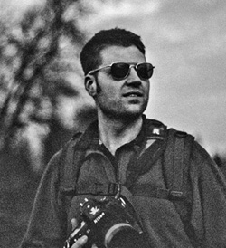

Hello! I am a Northwest lifestyle photographer and freelance photojournalist. I've spent over a decade with a camera in my hand, documenting adventures and telling stories through photographs. My inspiration for photojournalism began after meeting Associated Press photographers during the Iraq War in 2004. There as a solider myself, I worked on a project telling the story of a comrade's tour of combat. Since then I have been published in newspapers, commercial advertising and hired for personal commissioned work. I currently live in the great city of Seattle where I've decided to settle after a considerable amount of traveling.Though photography has always been my strongest passion, I also spend a lot of my time outdoors. I'm an accomplished sea kayaker who has traveled all over Puget Sound, The San Juan Islands and the Strait of Juan de Fuca. If I'm not on the water then I'm out backcountry trails or climbing sub alpine terrain. Just as you would expect, you will always see me with my camera.